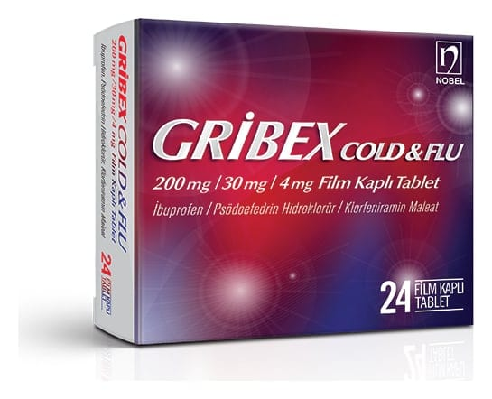

Gribex Cold & Flu 200 mg/30 mg/4 mg Film Kaplı Tablet, 30 Adet

Ne için kullanılır
KT · Bölüm 1GRİBEX COLD & FLU, koyu pembe renkli, yuvarlak, bombeli film kaplı tabletlerdir. GRİBEX COLD & FLU film kaplı tablet, şeffaf PVC/Aclar–Alüminyum folyo blisterlerde 24 ve 30 film kaplı tablet olarak pazarlanmaktadır. Bir film kaplı tablet; ibuprofen 200 mg, psödoefedrin hidroklorür 30 mg ve klorfeniramin maleat 4 mg içerir.
İbuprofen non steroid antiinflamatuar ilaç grubundandır. İbuprofen vücutta ağrı ve inflamasyonu azaltır, ateşi düşürür. Psödoefedrin nazal pasajlardaki kan damarlarını büzen dekonjestan bir maddedir. Genişleyen kan damarları burun tıkanıklığına sebep olur. Klorfeniramin vücutta doğal histaminin etkisini azaltan antihistaminik bir ajandır. Histamin, alerjik bir reaksiyon olduğunda vücutta salınan kimyasallardan biridir. Histamin hapşırık, kaşıntı, gözlerde sulanma ve burun akıntısına neden olur.
GRİBEX COLD & FLU film kaplı tablet; Soğuk algınlığı, grip, sinüzit ve diğer üst solunum yolu enfeksiyonları ile birlikte görülen ateş, burun akıntısı ve burun tıkanıklığı içeren semptomların giderilmesinde kullanılır.